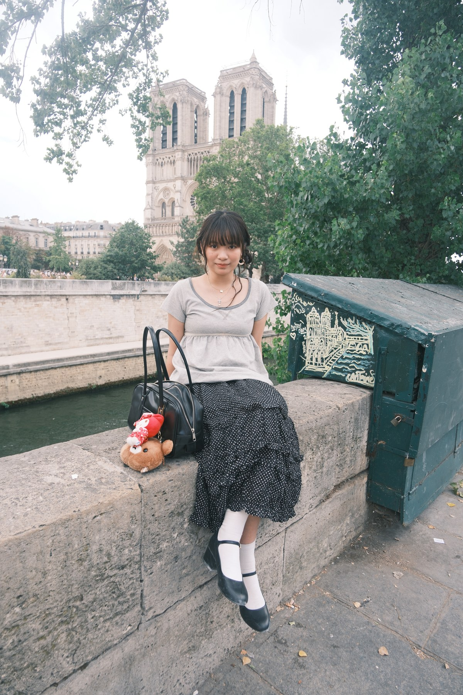

Between Algorithms and Experience: How Structural Position and Cost Conditions Shape Algorithm Aversion among Platform Workers
Technology in SocietyUnder Review
Ph.D. Student in Sociology
The Chinese University of Hong Kong
My research interests focus on social demography, especially marriage and family. My current work examines gender- and family-related issues in divorce judicial practice. I am also interested in computational social science methods and the broader implications of technological advances.

Technology in SocietyUnder Review
Social Science ResearchUnder Review
* Co-first authors. † Corresponding author.
Ph.D. in Sociology
LL.B. in Sociology
Exchange